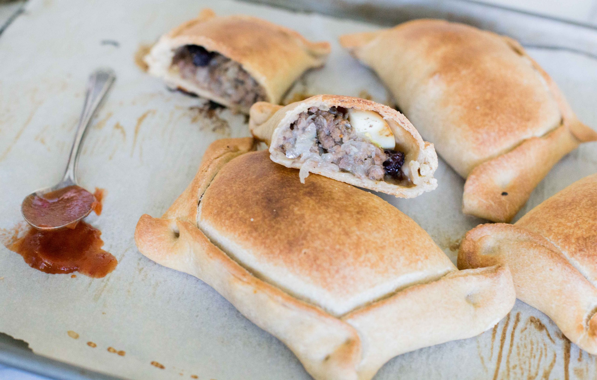

Empanadas de Pino

Descripción
Empanada de pino tradicional chilena, infaltable en las fiestas patrias.
Ingredientes:
Para el pino
- 1 kilo o 2 libras de carne de vacuno picada, puede ser posta por ejemplo (top Sirloin).
- 1 taza de caldo de vacuno.
- 3 cebollas grandes o 4 medianas picadas en cubos chicos.
- 2 cucharadas de harina.
- 2 cucharadas de ají de color o paprika o merkén.
- 1/2 cucharadita de comino.
- sal y pimienta.
- 4 cucharadas de aceite.
- 5 huevos duros
Opcional
- 20 aceitunas negras.
- 20 pasas.
Para la masa
- 1 taza de leche.
- 1 taza de agua tibia.
- 1 cucharada de sal rasa.
- 1 kilo de harina.
- 4 yemas de huevo.
- 180 gramos de manteca vegetal derretida tibia.
Instrucciones:
Para el pino
- Siempre hacerlo el día antes.
- Calentar en una olla grande el aceite, sofreír la carne hasta que se dore un poco, unos 8 minutos, agregar el ají de color, sal, pimienta y comino, sofreír unos minutos más.
- Agregar el caldo y dejar cocinar 30 minutos a fuego bajo. Agregar las cebollas incorporar bien y dejar cocinar a fuego medio hasta que la cebolla este suave, unos 30 minutos más.
- Agregar el harina y revolver bien, ajustar la sazón de ser necesario. Dejar enfriar y refrigerar.
Para la masa
- Hacer una salmuera con la leche, el agua y la sal, revolver hasta disolver la sal totalmente.
- En un bol grande poner toda la harina, agregar las yemas (todas juntas), incorporar revolviendo con una cuchara de palo o con un tenedor o con la punta de los dedos como pellizcando. Quieren obtener una arenilla de distintos grosores. Agregar la manteca y trabajar un poco más de la misma manera, a esta altura solo se tendrán migas no una masa todavía.
- Seguir trabajando la masa mientras van agregando la salmuera hasta obtener una masa suave y elástica. Esto les va a tomar unos 10 minutos de amasado a mano.
- En caso de necesitar mas humedad seguir agregando agua y leche sin sal.
- Precalentar el horno a 350ºF o 180ºC para las empanadas de pino.
- Separar la masa en 20 porciones y cubrir con un paño húmedo. Trabajar cada porción individualmente, uslereando hasta conseguir una masa fina, cortar en círculo y rellenar con 2 cucharadas de pino, un cuarto de huevo duro, aceituna y pasas si desean. No recomiendo extender la mitad de la masa y cortar varias redóndelas a la vez porque van a quedar muchos recortes y cada vez que los uslerean se van poniendo más duros. Con este método se aseguran que sus empanadas queden bonitas, dado que la masa tendrá la flexibilidad adecuada.
- Cerrar untando con leche el borde, presionar firmemente y hacer los dobleces. Pincelar con un batido de huevo y agua antes de llevar al horno.
- Hornear por 30-35 minutos hasta que estén doradas, vigilarlas durante la cocción si se inflan, enterrar un mondadientes para desinflarlas así no se les abren.
- Servir calientes. Para recalentar ponerlas al horno a la misma temperatura por 15 minutos.